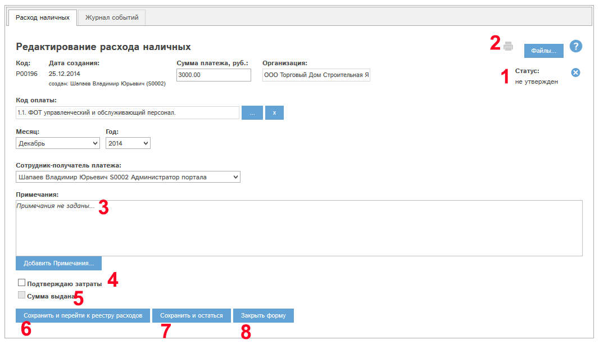
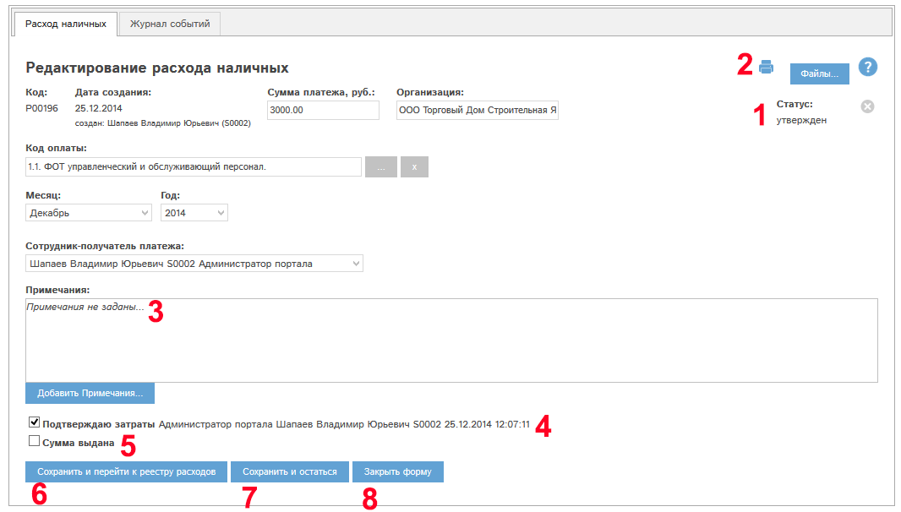
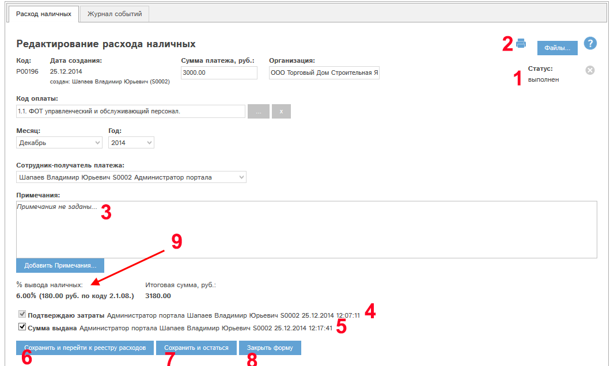
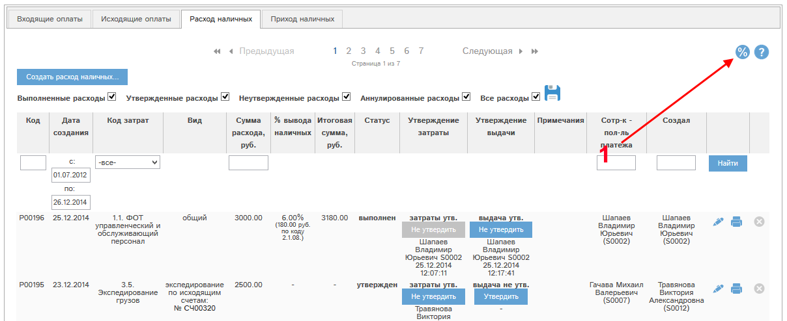
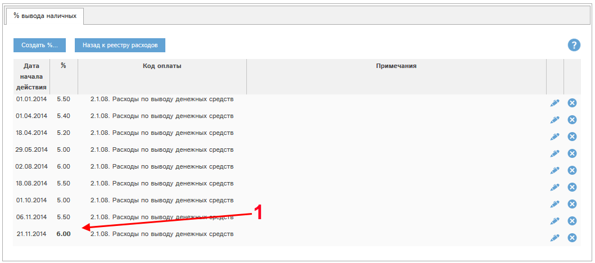
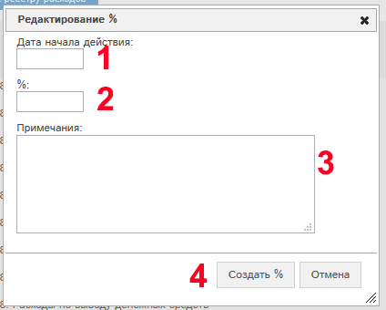

Рис. 5.52 Окно просмотра/редактирования расхода наличных
Рассмотрим блоки окна редактирования расхода наличных.
Блок «статус» – на Рис. 5.52 имеет значение «не утвержден». У каждого расхода в данном блоке указан его статус.
Статус расхода меняется следующим образом:
- Расход создали, но не утвердили – статус «не утвержден».
- Утвердили затраты по расходу– статус «утвержден».
- Утвердили выдачу суммы - статус "выполнен".
- Аннулировали расход (только из статуса «не утвержден») – статус «Аннулирован».
Блок (3) – Примечания полностью аналогичен блоку «Примечания» в разделе Просмотр и редактирование заявки.
Подтверждаю затраты (4) – при наличии у Вас прав Вы можете утвердить затраты по расходу наличных.
Утвердим затраты по расходу. Для этого необходимо проставить этот флаг и нажать кнопку «Сохранить и остаться» (7).
Данное действие так же возможно провести при наличии прав из реестра расходов. Для этого служит кнопка «утвердить» в колонке «Утверждение затраты».
При утверждении затрат расход наличных переходит в статус «утвержден».
Редактирование расхода в статусе «утвержден» невозможно!
Для редактирования расхода необходимо снять это утверждение!
У расхода из нашего примера утвердили затраты. Окно просмотра расхода наличных выглядит следующим образом:

Рис. 5.54 Окно просмотра/редактирования расхода наличных после утверждения затрат.
Становится доступной кнопка - печать расхода.
Для проведения расхода наличных необходимо утвердить выдачу суммы. Для этого (при наличии у Вас прав на это действие) необходимо проставить галочку "Сумма выдана" (5) и нажать "Сохранить и остаться" (7).
У расхода из нашего примера утвердили выдачу суммы. Окно просмотра расхода наличных выглядит следующим образом:

Рис. Окно просмотра/редактирования расхода наличных после утверждения выдачи суммы.
При утверждении выдачи суммы в расходе наличных автоматически рассчитывается величина % вывода наличных и итоговая сумма расхода наличных с учетом этих процентов. При наличии у вас специальных прав Вам доступны эти поля в карте расхода - блок (9) на рисунке.
Управление процентами вывода наличных (при наличии у Вас соответствующих прав) доступно в реестре расходов наличных:

Рис. Кнопка перехода в управление % вывода наличных в реестре расходов.
Для перехода к управлению необходимо нажать кнопку  (1).
(1).
Откроется реестр процентов:

Рис. Реестр процентов вывода наличных. Актуальный процент.
Актуальный процент вывода наличных выделен в реестре жирным шрифтом (1). Дата, в которую происходит утверждение выдачи суммы по расходу наличных, попадает в определенный интервал дат по этому реестру, при этом для расчета величины итоговой суммы используетс процент для этого интервала дат.
Пример. Мы утвердили выдачу суммы 24.12.2014. Согласно реестру процентов, будет использовано значение 6%, применяемое с 24.11.2014 (1). Будет использована статья расходов "2.1.08. Расходы по выводу денежных средств".
Для создания нового процента вывода наличных необходимо нажать кнопку "Создать %...". Откроется окно создания процента:

Рис. Окно создания процента вывода наличных.
В окне нужно указать дату начала действия процента (1), величину процента (2), при необходимости - указать примечания. Для создания - нажмите кнопку "Создать %" (4). % будет создан и помещен в реестр процентов.
С помощью кнопки  у конкретного процента можно просмотреть или
отредактировать данный процент.
у конкретного процента можно просмотреть или
отредактировать данный процент.
С помощью кнопки  можно удалить процент.
можно удалить процент.